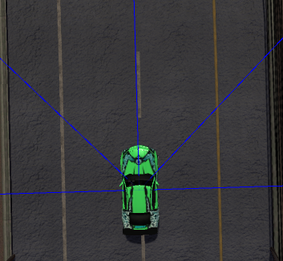

Using data:
5-foward-direction collision prediction, steering, throttle, brake
| 1. | Speed data was not included since we are lacking in data. We'll try to train run data in various speed. |
| 2. | Training data in maps with height changes. |
| 3. | More precise behaviors and more actions(e.g. drifting). |